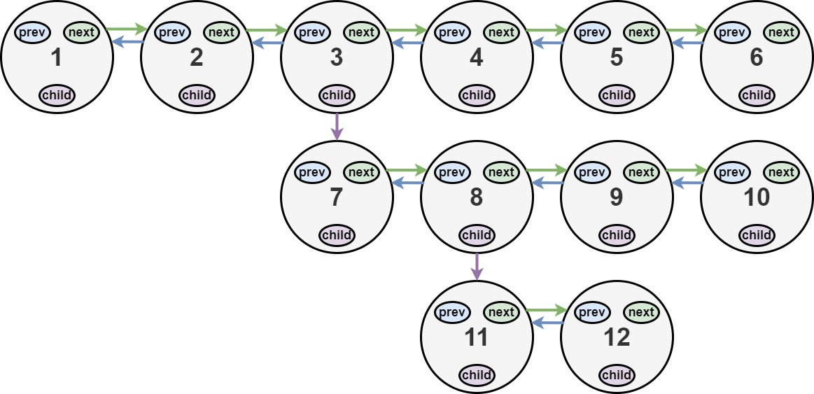
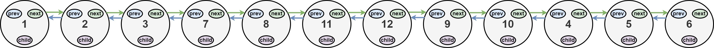
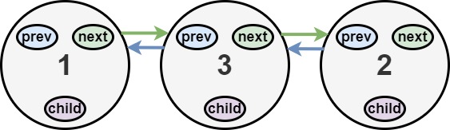

430. 扁平化多级双向链表
一遍扫描：遇到带 child 的结点，把整个子链（已展开）插到它和 next 之间，再从子链头继续扫。
思路
- 指针
cur沿主链走；cur.child非空就拼接：cur.next = child、子链尾tail.next = next，prev 成对回接。 - 摘链时把
cur.child置 null（题目要求扁平后所有 child 为空）。 - 拼接后从
cur = child继续：子链内部的子链也会在后续被插到正确位置。 - 关键顺序：先把子链尾接到原
next，再把next.prev指回子链尾，别断链。
图解
最优解
1/*2// Definition for a Node.3class Node {4 public int val;5 public Node prev;6 public Node next;7 public Node child;8};9*/10 11class Solution {12 public Node flatten(Node head) {13 Node cur = head;14 while (cur != null) {15 if (cur.child == null) { cur = cur.next; continue; }16 Node next = cur.next, child = cur.child;17 cur.child = null; // 扁平后 child 必须为空，顺手摘掉18 cur.next = child; // 子链整段插到 cur 和 next 之间19 child.prev = cur;20 Node tail = child;21 while (tail.next != null) tail = tail.next; // 找子链的尾22 tail.next = next;23 if (next != null) next.prev = tail;24 cur = child; // 从子链头继续，处理它的子链25 }26 return head;27 }28}题目
你会得到一个双链表，其中包含的节点有一个下一个指针、一个前一个指针和一个额外的 子指针 。这个子指针可能指向一个单独的双向链表，也包含这些特殊的节点。这些子列表可以有一个或多个自己的子列表，以此类推，以生成如下面的示例所示的 多层数据结构 。
给定链表的头节点 head ，将链表 扁平化 ，以便所有节点都出现在单层双链表中。让 curr 是一个带有子列表的节点。子列表中的节点应该出现在扁平化列表中的 curr 之后 和 curr.next 之前 。
返回 扁平列表的 head 。列表中的节点必须将其 所有 子指针设置为 null 。
示例 1：

输入：head = [1,2,3,4,5,6,null,null,null,7,8,9,10,null,null,11,12] 输出：[1,2,3,7,8,11,12,9,10,4,5,6] 解释：输入的多级列表如上图所示。 扁平化后的链表如下图：
示例 2：

输入：head = [1,2,null,3] 输出：[1,3,2] 解释：输入的多级列表如上图所示。 扁平化后的链表如下图：
示例 3：
输入：head = [] 输出：[] 说明：输入中可能存在空列表。
提示：
- 节点数目不超过
1000 1 <= Node.val <= 105
如何表示测试用例中的多级链表？
以 示例 1 为例：
1---2---3---4---5---6--NULL
|
7---8---9---10--NULL
|
11--12--NULL
序列化其中的每一级之后：
[1,2,3,4,5,6,null] [7,8,9,10,null] [11,12,null]
为了将每一级都序列化到一起，我们需要每一级中添加值为 null 的元素，以表示没有节点连接到上一级的上级节点。
[1,2,3,4,5,6,null] [null,null,7,8,9,10,null] [null,11,12,null]
合并所有序列化结果，并去除末尾的 null 。
[1,2,3,4,5,6,null,null,null,7,8,9,10,null,null,11,12]
题面取自力扣当前版本。
数据快照 2026-11-04。题面版权归力扣所有，本站点仅供本人学习使用，请勿对外发布。